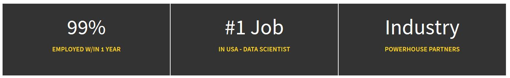

Apply Now
Admissions Information
Information management encompasses policies, processes, and applications for managing data, transforming data into information, and synthesizing information into actionable knowledge to drive competitive advantage. The University of Maryland College of Information Studies (iSchool) Master of Information Management (MIM) degree prepares you to be a strategic leader in the use of information and technology in any organization. The MIM degree fuses training in computer science, information science, and advanced analytics. It provides you with skills and knowledge to develop and deploy emerging technologies, lead efforts to develop and modernize organizational information management capabilities, and manage high-value information resources to successfully meet users’ information needs. Our graduates become data scientists, business and data analysts, information architects, and much more.
The Master of Information Management (MIM) program will provide you with an opportunity to build a career in a rapidly growing Information Management field. You will learn to visually communicate quantitative and qualitative messages and to bridge a vital gap in the corporate world between the technical department and the rest of the organization.
Join us to discover innovative methods of applying information through collection, critical thinking, and interpretation of data for efficient and effective decision making.
|
The skills I’m learning in the iSchool are preparing me to be a leader in the information industry. I’m learning how to use data analytics and business analytics to help clients reach decisions that are beneficial." – Alexandria Porter, MIM 2018 |
The MIM program offers:
|
The MIM degree sets our graduates up for successful careers as data scientists, business analysts, data analysts, information analysts, business intelligence managers, data visualization specialists, information architects, systems analysts, UI/UX designers, and usability analysts – and many other information leadership career paths.
|
"The key is being able to filter information and present it in a way that people are going to be able to make the best use of. The iSchool allows you to specialize in that." -- Lenny Williams, MIM Alum |
Apply Now
Admissions Information